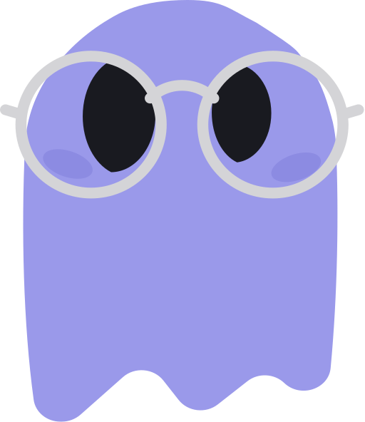

02 · el mecanismo
Aquí
no decide
el modelo

quiere correr
rm -rf ./build
SIEMPRE CORRE
PreToolUse
if (cmd.match(/rm\s+-rf/)) →
block
exit 2
✓
lo permitido pasa
✕
lo demás, no
Se valida
aunque el modelo no quiera
.
fixtergeek